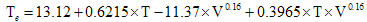

We only know enough Python commands to write simple programs so far, but we do need to practice using what we've got so ... write a program that produces sessions like this one:
Useless Trivia Generator v0.01 ============================== How old are you? 28 And how many pounds do you weigh? 165 Did you know that you're 196 in dog years! But you're also over 883008000 seconds old. Did you know that on the moon you would weigh only 27.5 pounds? But on the sun, you'd weigh 4471.5 pounds (but not for long!).
Some facts that might be helpful to you in writing your program:
While the temperature tells us how cold the air outside is, we are often more interested in how quickly we will cool down. The rate at which we lose heat depends on the temperature outside, and also on the speed of the wind: the combined effect of temperature and wind speed is often called the wind chill. The effective temperature,Te, can be calculated using the expression,

where V is the wind speed in kilometres per hour, and T is the temperature in Celsius.
Write a program that calculates the effective temperature. It should request the temperature and wind speed from the user and output the effective temperature.
A historian has come across a large body of material using outdated units of measurement. Specifically, distance measurements are given in terms of feet, yards (1 yard = 3 feet), chains (1 chain = 22 yards), and furlongs (1 furlong = 10 chains). Write a program that will let her enter one of the historical measurements in furlongs, chains, yards and feet (e.g. 2 furlongs, 3 chains, 13 yards and 2 feet) and output the equivalent measurement in feet (i.e. 1559 feet).
The historian above now wishes to convert some measurements she has made in feet into these archaic units. Write a program that will convert from feet to furlongs, chains, yards and feet, so if she inputs 1559 the output should be something like:
1559 feet is equal to: 2 furlongs, 3 chains, 13 yards, and 2 feet.
Use the following naming scheme for your program files:
aassignment#pproblem#vversion#.py
. So your first attempt at problem 1 on this assignment will be named
a2p1v1.py and your second attempt (should there be one) will
be named a2p1v2.py .
Submit your assignment by emailing your python programs to me. I advise to submit early and submit often, since I will often review your programs as they are submitted and provide feedback that will let you improve them.